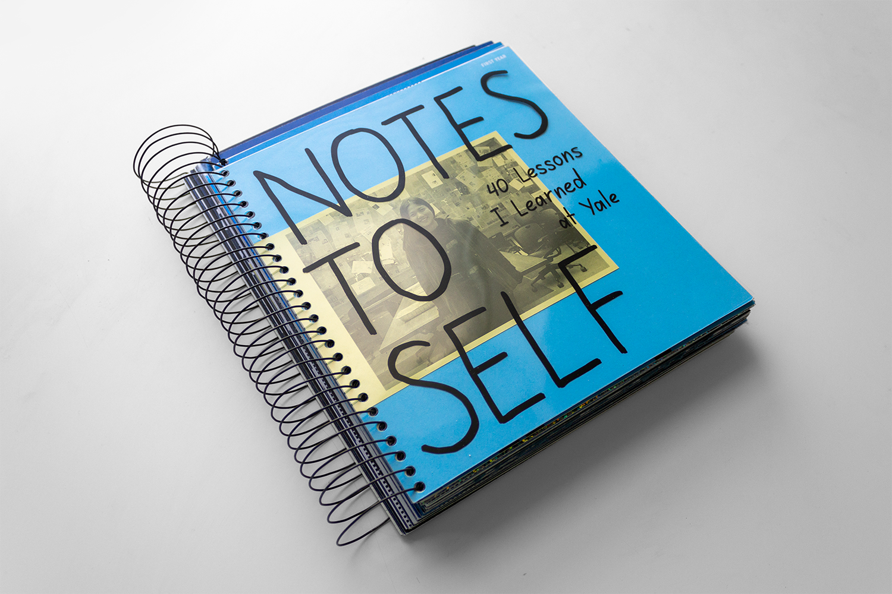
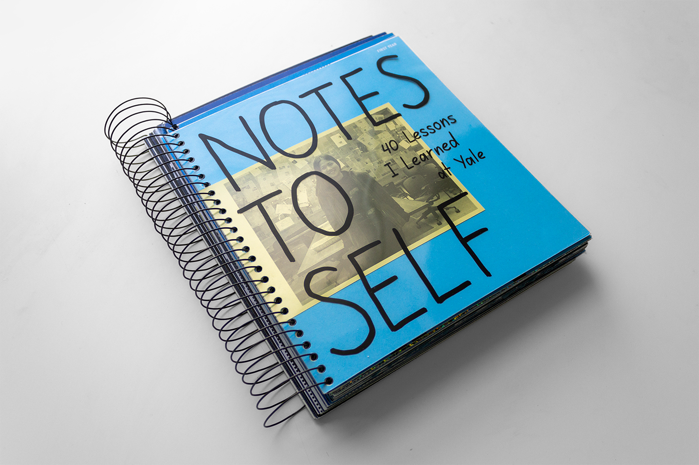
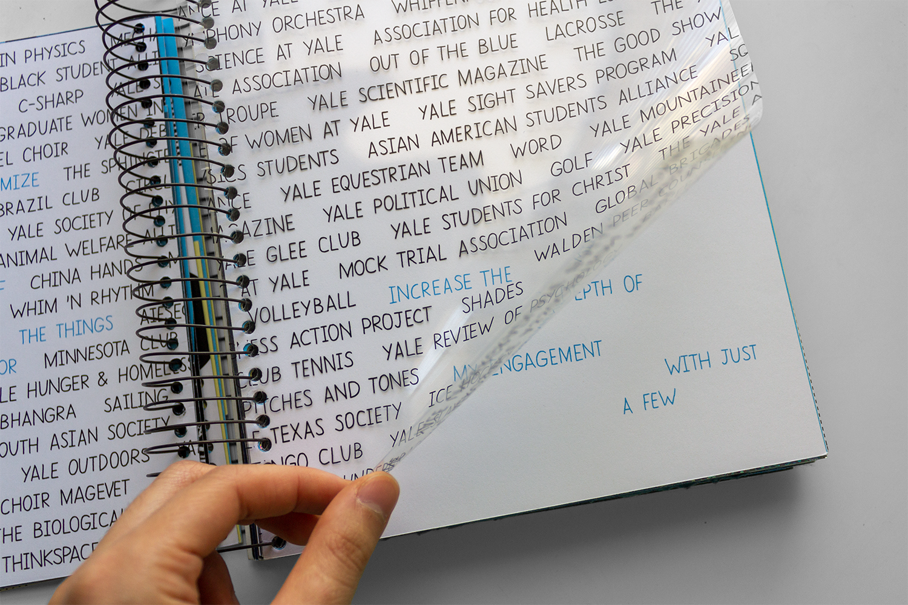
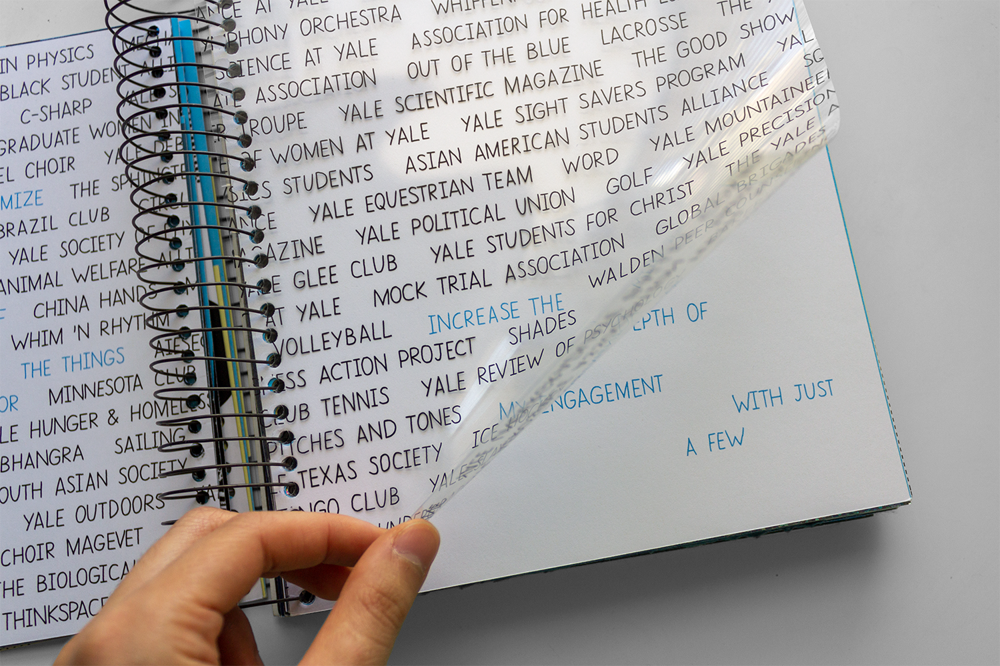

 

Notes to Self
Notes to Self: 40 Lessons I Learned at Yale is an interactive book I designed around a list of 40 lessons I learned in college, 10 from every year. The meaning of each lesson is reflected in the interactive structure of their pages. The overall design of the book alludes to notetaking and journaling; it is spiral bound and has the height and width of a standard composition notebook. The title and lessons are handwritten in my own hand and yellow inserts tell stories from my time at Yale.
The book is divided into four sections, one for every year. The insubstantial light blue of the first section reflects my state as an unformed student entering college. The color gets progressively darker with each section until it becomes Yale Blue, representing the Yale student I have fully become. Different page proportions reflect each year’s uniqueness, yet there is still continuity as the sections and years build on one another.